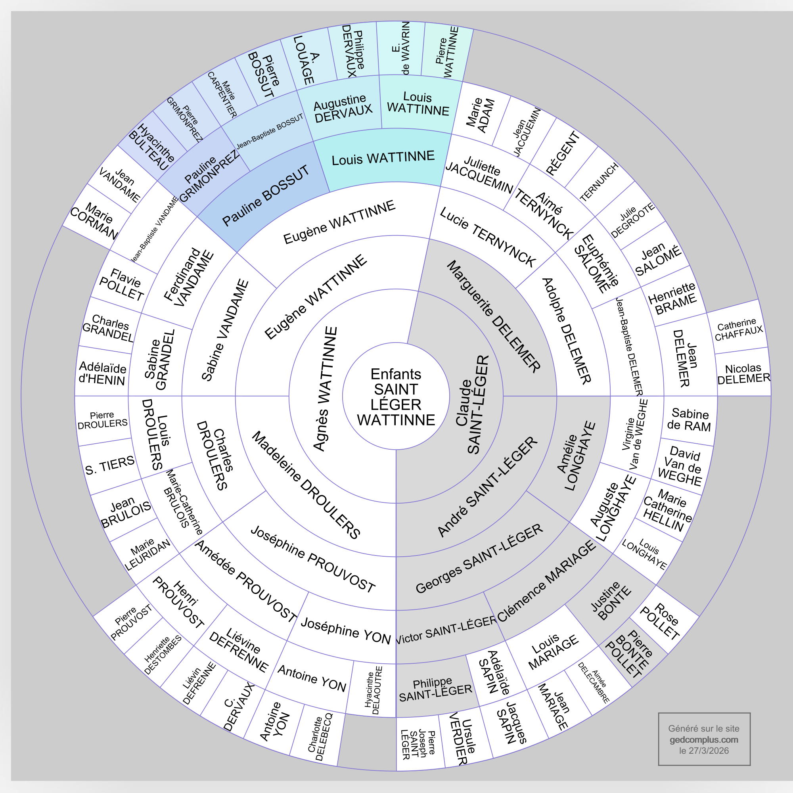
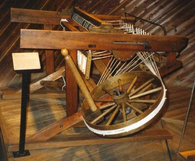
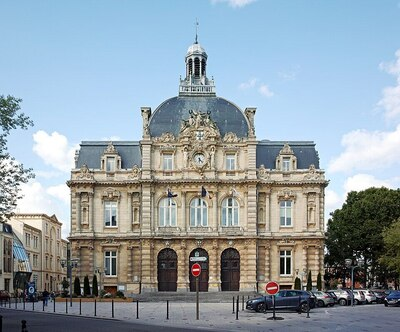
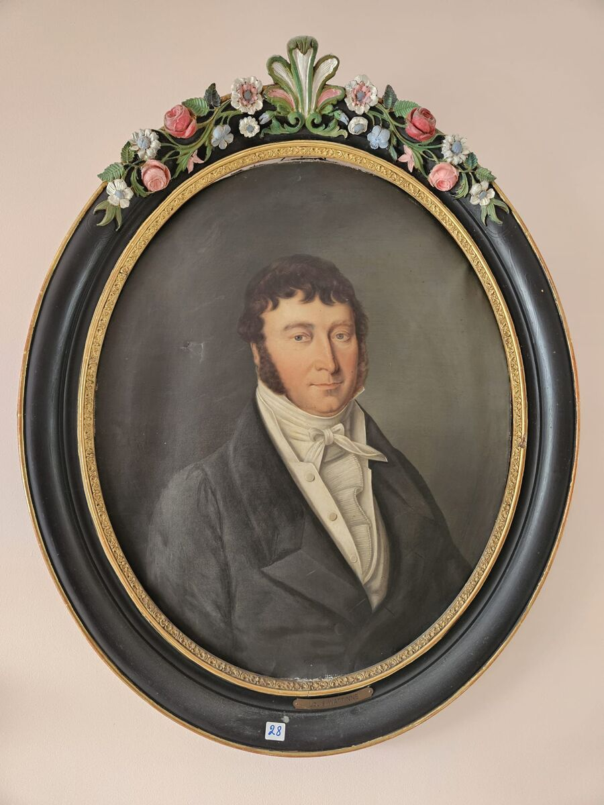
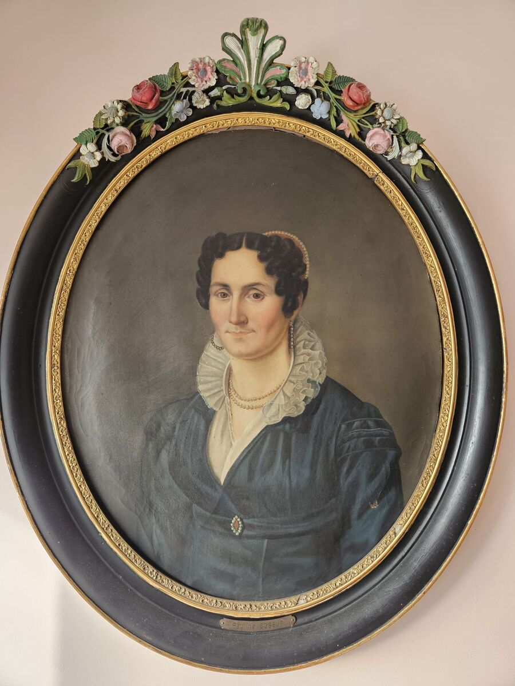
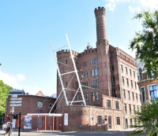
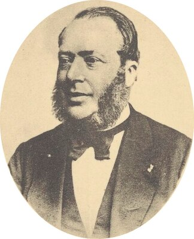

Deux familles flamandes — Les racines de Louis Wattinne et Pauline Bossut (1623 – 1837)
Deux familles flamandes — Les racines de Louis Wattinne et Pauline Bossut (1623 – 1837)
Rédigé par Arnaud Saint-Léger en 2026 sur la base des sources indiquées en bas de page.
Contexte historique : la Flandre textile
Tourcoing et Roubaix, deux villes sœurs
Pour comprendre d'où viennent Louis Wattinne et Pauline Bossut, il faut d'abord comprendre le pays qui les a façonnés. Tourcoing et Roubaix sont deux villes voisines, séparées de quelques kilomètres dans la plaine flamande, à quelques lieues de Lille. En apparence, elles se ressemblent : toutes deux vivent du textile depuis le Moyen Âge, toutes deux sont habitées par des familles d'artisans qui transmettent leur métier de père en fils, toutes deux parlent encore un patois flamand teinté de mots français. Mais elles ont des caractères distincts. Tourcoing est la ville de la laine et des tisseurs, plus ancienne, plus corporatiste, jalouse de ses franchises. Roubaix, plus jeune et plus audacieuse, se spécialise dans le coton dès la fin du XVIIIe siècle et va devenir, au XIXe, l'une des capitales mondiales de l'industrie textile.
Dans ces deux villes, les familles Wattinne et Bossut ont grandi, travaillé, bâti leur réputation pendant des générations, avant qu'un mariage en 1837 ne les réunisse enfin.
Les draps de Flandre — une tradition millénaire
Le textile est l'âme de la Flandre depuis au moins le XIIe siècle. La région exporte ses draps jusqu'en Livonie et jusqu'en Russie, ses tisserands sont organisés en guildes puissantes, ses marchands sont parmi les plus actifs d'Europe.
La Livonie désignait au Moyen Âge la vaste région baltique correspondant aujourd'hui à l'Estonie et à la Lettonie. C'était l'une des grandes destinations commerciales de la mer du Nord, et recevoir les draps de Flandre jusqu'à Riga était, pour les Tourquennois du XVe siècle, l'équivalent d'exporter aujourd'hui vers l'Asie.
À Tourcoing, dès le XVe siècle, la draperie occupe les deux tiers de la population. En 1491, l'empereur Maximilien d'Autriche accorde à la ville une franche foire, la hissant au rang des grandes cités drapières de Flandre.
Une franche foire était une foire accordée par privilège royal ou impérial, où les marchands pouvaient commercer librement pendant quelques jours sans s'acquitter des droits de douane ou des taxes locales habituels. C'était un outil puissant de développement économique : les foires franches attiraient des marchands de toute l'Europe, et les villes qui en bénéficiaient voyaient leur activité commerciale exploser.
Les notables deviennent des tisserands, les tisserands deviennent des notables. Chaque maison a, dans sa cave, un métier à tisser. Pendant des siècles, cette industrie reste artisanale et domestique : les paysans filent et tissent à domicile sur des métiers dont ils sont propriétaires, et apportent leur production aux marchands-fabricants qui leur avancent la matière première et rachètent le produit fini.
Guildes, confréries et corporations
Dans ce monde artisanal, la vie sociale est structurée par trois types d'associations que l'on a tendance à confondre mais qui ont chacune leur logique propre.
Les guildes (ou gildes) sont des associations de marchands ou d'artisans du même métier, qui se regroupent pour défendre leurs intérêts commerciaux, fixer les prix et réguler la concurrence. À Tourcoing, la gilde de Saint-André regroupe les tisserands et leurs proches. On y entre sur recommandation, et en faire partie est un signe d'intégration dans la notabilité locale.
Les confréries sont des associations à vocation religieuse et de solidarité mutuelle. Elles organisent les enterrements, les fêtes patronales, les secours aux veuves et aux orphelins. Appartenir à une confrérie, c'est affirmer son appartenance à une communauté.
Les corporations (ou jurandes) sont des organisations reconnues par l'État qui encadrent légalement l'exercice d'un métier : fixation des normes de qualité, contrôle de l'apprentissage, protection contre la concurrence extérieure. En France, elles sont supprimées par la Révolution en 1791, qui proclame la liberté du commerce et de l'industrie — ouvrant ainsi la voie aux premières usines.
La rivalité avec Lille
La prospérité de Tourcoing est longtemps entravée par Lille. La grande voisine s'est arrogé au fil des siècles des privilèges qui lui permettent de maintenir son monopole sur le commerce et l'artisanat textile. Un édit de 1534 interdit aux villages et bourgs du plat pays de fabriquer des tissus de pure laine. Pendant trois siècles, les Tourquennois se battent contre ces prétentions lilloises. Leurs guildes, leurs confréries, leurs corporations sont aussi des instruments de résistance collective contre l'hégémonie de la grande voisine.
Ce n'est qu'au XVIIIe siècle, avec l'instauration progressive de la liberté économique, que Tourcoing peut enfin développer librement son industrie. En 1693, la ville compte déjà près de 500 métiers à tisser. Au début du XVIIIe siècle, sa population dépasse dix mille habitants. Tourcoing est en train de devenir une vraie ville industrielle — mais à sa manière : une ville d'artisans indépendants, de familles qui se transmettent leur savoir-faire, de réseaux noués dans les confréries et les gildes.
La Révolution industrielle
La véritable rupture survient dans la seconde moitié du XVIIIe siècle, en Angleterre d'abord. En 1764, un tisserand du Lancashire nommé James Hargreaves invente la spinning-jenny.
La spinning-jenny est une machine à filer qui actionne simultanément plusieurs fuseaux là où une fileuse n'en faisait tourner qu'un seul. Les premiers modèles en actionnent huit, puis seize, puis quatre-vingts. D'un coup, la productivité est multipliée par dix ou vingt, le fil devient moins cher, et le tisserand artisanal qui file lui-même sa matière première ne peut plus rivaliser avec les premières usines. C'est l'une des inventions déclencheurs de la Révolution industrielle.

D'autres inventions suivent rapidement en Angleterre : la water frame d'Arkwright en 1769, le métier à tisser mécanique de Cartwright en 1785. En quelques décennies, l'industrie textile britannique est transformée de fond en comble. Puis ces machines traversent la Manche. Dans le Nord de la France, elles arrivent d'abord clandestinement — interdites ou mal vues, car elles menacent les tisserands à domicile. Mais les entrepreneurs les plus audacieux les introduisent quand même, parfois en faisant passer la mécanique en pièces détachées dans les bagages. Vers 1790, les premières filatures à la spinning-jenny apparaissent à Tourcoing. La Révolution française, qui supprime les corporations en 1791 et libère le commerce, lève les derniers obstacles. Désormais, chacun peut entreprendre, fabriquer, vendre comme il l'entend. C'est dans ce monde en pleine mutation que les Wattinne et les Bossut vont franchir chacun un pas décisif.
Les deux branches en un coup d'œil
Au fait, qu'est ce que la filature, la retorderie et le tissage ?
La filature est la première étape. On part de la matière brute — une touffe de coton, de laine ou de lin — et on la transforme en fil. Le travail consiste à démêler les fibres, les étirer, les tordre légèrement pour qu'elles s'accrochent entre elles, et les enrouler sur une bobine. C'est ce que la spinning-jenny mécanise. La filature produit un fil simple, fin ou épais selon la destina
La retorderie est une étape intermédiaire que l'on oublie souvent. On prend plusieurs fils simples issus de la filature, et on les tord ensemble pour obtenir un fil plus solide, plus régulier, plus résistant. Un fil à deux brins, trois brins, etc. C'est la même logique qu'une corde : plusieurs torons tordus ensemble valent mieux qu'un seul. La retorderie d'Auchy-lès-Hesdin — et celles de Blingel et Grigny que les Wattinne possédaient — servaient exactement à ça : préparer le fil pour les tisserands ou pour des usages techniques comme la filterie.
Le tissage est la dernière étape. On prend les fils produits par la filature et tordus par la retorderie, et on les entrelace sur un métier à tisser pour fabriquer un tissu — une étoffe plate dont on fera ensuite des vêtements, des draps, des tentures. Le tisserand travaille avec deux jeux de fils : les fils de chaîne (tendus verticalement sur le métier) et les fils de trame (qui passent horizontalement entre eux).
La branche Wattinne — De la truelle à la laine (Tourcoing, 1623–1840)
Un nom de la terre flamande
Le nom Wattinne vient du vieux flamand wastine, qui désigne une terre inculte, marécageuse, stérile. C'est l'un des noms les plus anciens de Flandre — des Lambertus de Wastina sont cités dans des chartes dès 1138, et des chevaliers portant des variantes de ce nom signent des actes aux côtés des magistrats de Flandre aux XIIe et XIIIe siècles. Le nom a pris mille formes au fil du temps — Wastyn, Watine, Wattinne — selon les bourgs et les époques. Une règle simple finit par s'établir : ceux de Tourcoing s'appellent Wattinne, ceux de Roubaix Watine.
La famille est enracinée à Tourcoing depuis au moins le XVIe siècle. Pendant des générations, les Wattinne sont cultivateurs, artisans, bâtisseurs. Ils construisent les maisons et les églises de leur ville. En 1699, un Antoine Watine œuvre à l'église Saint-Martin de Roubaix. En 1712, un Jean Wattinne est architecte, entrepreneur et arpenteur, et construit un nouveau chœur à l'église Saint-Christophe de Tourcoing. Ce sont des gens de métier, d'une respectabilité tranquille, ancrés dans leur communauté.
Antoine Watine (°1623) — Maçon et laboureur
Le premier ancêtre que l'on peut dater avec précision naît le 27 juin 1623. Antoine Watine est maçon et laboureur — deux métiers qui, à l'époque, ne s'excluent pas. À Tourcoing, les petits artisans du bâtiment cultivent souvent quelques lopins pour compléter leurs revenus. Être maçon dans une ville en développement n'est pas un mauvais sort : les chantiers ne manquent pas, les maisons en pierre remplacent progressivement les constructions en bois et pisé, et les bâtisseurs compétents sont recherchés.
En 1649, il épouse Françoise Chombart. Tourcoing est alors une ville en plein essor, qui vient tout juste de rentrer dans le giron français (1668 pour l'ensemble de la région), après des décennies d'occupation espagnole. Les maçons comme Antoine y ont du travail en abondance.
Jean Hubert Wattinne (°1650, †1689) — L'enfant qui laisse un fils
Leur fils Jean Hubert naît le 12 novembre 1650 à Tourcoing. Il devient maître maçon arpenteur — un titre qui marque une vraie progression par rapport à son père. Le maître maçon dirige des chantiers, emploie des compagnons. L'arpenteur mesure les terres, établit les plans, intervient dans les litiges de propriété. Jean Hubert est un homme qui sait lire et compter, capable de tenir un chantier et de défendre ses intérêts devant les magistrats.
Il épouse Christiane Caby en 1672. Mais sa vie sera courte. Le 29 mars 1689, Jean Hubert Wattinne meurt à Tourcoing, à l'âge de 38 ans. Il laisse sa femme Christiane enceinte. Quatre mois plus tard, en juillet 1689, naît un fils : Jean Antoine. Cet enfant ne connaîtra jamais son père.
Jean Antoine Wattinne (°1689, †1759) — L'enfant posthume
Jean Antoine Wattinne entre dans le monde sans père. Tourcoing commence alors à trouver son second souffle après les guerres de Louis XIV. Orphelin de père dès la naissance, il va pourtant vivre jusqu'à 69 ans — une longévité remarquable dans une époque où la mortalité frappe sans discernement.
En 1746, son nom apparaît dans les archives de la confrérie de Saint-André, l'une des grandes gildes tourquennoises. Il a alors 57 ans. Cette même année, il se marie tardivement avec Marie Françoise Yon, née en 1712. Leur fils Pierre François naît en 1749. Jean Antoine mourra dix ans plus tard, en 1759.
Pierre François Wattinne (°1749, †1812) — L'architecte et le maire
Pierre François Wattinne est l'homme du tournant. Né en 1749, il appartient à une génération qui va vivre la Révolution française en pleine maturité — et qui va devoir choisir son camp. Les sources sont claires à son sujet : Pierre François était favorable aux idées nouvelles. Dans un pays où beaucoup de notables hésitent, cet engagement va lui ouvrir des portes.
Son métier dit déjà beaucoup de lui : Pierre François est architecte. La tradition maçonne de son père et de son grand-père s'est transformée en vocation libérale. Un architecte à Tourcoing à la fin du XVIIIe siècle, c'est un homme instruit, capable de concevoir des plans, de lire des devis, de négocier avec les commanditaires. C'est un homme à la frontière entre le monde des ouvriers et celui des notables.
En 1781, il épouse Euphroïsine de Wavrin, née à Tourcoing en 1759. Les de Wavrin sont une famille flamande d'ancienne noblesse — leurs ancêtres figurent comme seigneurs et sénéchaux de Flandre dès le XIIe siècle. Ce mariage place les Wattinne dans un réseau social plus élevé que celui de leurs ancêtres maçons. De cette union naît en 1785 leur fils Louis Joseph Xavier.
La Révolution éclate en 1789. À Tourcoing, les archives municipales sont en grande partie détruites dans le chaos des années révolutionnaires — ce qui explique les lacunes dans tant d'arbres généalogiques de la région. Les corporations sont supprimées en 1791. Pour Pierre François, favorable aux idées nouvelles, c'est une opportunité. Il est nommé maire de Tourcoing en l'an 1800-1801 (an IX du calendrier républicain), dans les premiers temps du Consulat de Napoléon Bonaparte.
Euphroïsine meurt en 1805, laissant Pierre François veuf avec un fils de vingt ans. Il le suit dans la tombe en 1812, sans avoir vu son fils construire l'empire commercial qui fera la gloire des Wattinne.

Louis Joseph Xavier Wattinne (°1785, †1840) — Le fondateur
Louis Joseph Xavier Wattinne naît en 1785 dans la tourmente révolutionnaire. Il perd sa mère à vingt ans, son père à vingt-sept. C'est un jeune homme qui doit se construire seul, dans un monde en pleine mutation, mais avec le réseau et la réputation que ses ancêtres ont patiemment constitués.
En 1808, il épouse Augustine Dervaux, fille d'un négociant et banquier de Tourcoing. Et dès 1810 — l'année même où naît son fils Louis Joseph — il fonde son établissement de négoce en laines. La fortune s'élève rapidement : les sources indiquent 600 000 francs en 1810 (Source familiale : thierryprouvost.com), soit l'équivalent de plusieurs dizaines de millions d'euros actuels — une richesse considérable pour un homme de vingt-cinq ans.


Louis Joseph Xavier mène aussi une brillante carrière civique : adjoint au maire de Tourcoing en 1815, puis membre de la Commission Administrative des Hospices de 1823 à 1826, puis suppléant de la Justice de Paix. Il habite rue de Gand, dans l'un des quartiers huppés de la ville. Augustine meurt en 1825 après avoir mis au monde dix enfants. Louis Joseph Xavier ne se remariera pas. Il meurt le 23 septembre 1840, à 55 ans, juste après que son fils s'est établi à Roubaix avec sa jeune épouse Pauline Bossut.
En trois générations — de Pierre François le maçon-maire à Louis Joseph Xavier le négociant fortuné — les Wattinne ont franchi l'essentiel du chemin. Il ne manque plus qu'un gendre et une association pour que leur nom s'impose sur toute une région.
La branche Bossut — Commissionnaires et bâtisseurs de Roubaix (1765–1837)
Roubaix — La ville du coton
À quelques kilomètres de Tourcoing, Roubaix a choisi une autre spécialité. À la fin du XVIIIe siècle, la ville se tourne résolument vers le coton — cette fibre venue d'Amérique et des Indes que la Révolution industrielle est en train de transformer. En l'an 1800-1801 (an IX du calendrier républicain), le maire de Roubaix peut écrire que l'industrie lainière a presque disparu de la ville, remplacée par la fabrication de cotonnades. Ce virage audacieux va faire la fortune de la cité.
Mais pour que des usines naissent et prospèrent, il faut plus que des capitaines d'industrie. Il faut des intermédiaires : des hommes qui courent les marchés, évaluent les lots de matière première, organisent les livraisons, avancent des fonds aux fabricants trop occupés pour quitter leur atelier.
Le commissionnaire est un intermédiaire commercial qui achète et vend au nom et pour le compte d'un tiers, moyennant une commission. Contrairement au marchand qui possède les marchandises, il ne prend pas de risque sur les stocks — mais il est rémunéré pour son réseau, sa connaissance des prix, et sa capacité à trouver acheteurs et vendeurs dans des délais rapides. Dans le Roubaix industriel du début du XIXe siècle, les commissionnaires sont les huiles essentielles de la machine économique : ils permettent aux fabricants de rester à leur métier sans se perdre dans les transactions commerciales.
Pierre François Bossut (°1765, †1845) — L'inventeur de la commission roubaisienne
Pierre François Joseph Bossut naît le 13 novembre 1765 à Roubaix. En 1790, il épouse Marie Catherine Céline Carpentier, née un an plus tard dans la même ville. La Société d'émulation de Roubaix a retenu son nom dans ses chroniques de la grande industrie roubaisienne avec une formule précise : c'est M. Bossut qui fonda la première maison de commission du genre. Ce n'est pas une petite affaire. Pierre François Bossut comprend avant les autres que l'industrialisation naissante a besoin de spécialistes du commerce et de la mise en relation. Il crée ce service, et ses concurrents finissent par l'imiter.
Pierre François vivra 79 ans, jusqu'en 1845 — assez longtemps pour voir son fils devenir maire de Roubaix et sa petite-fille Pauline s'établir comme l'une des grandes dames de l'industrie textile régionale.
Jean-Baptiste Joseph Bossut (°1790, †1874) × Pauline Grimonprez (°1796, †1876) — Le maire et ses filles
Jean-Baptiste Joseph Bossut naît le 22 octobre 1790 à Roubaix. Il reprend et amplifie le modèle commercial de son père. Commissionnaire en textile, il étend ses activités et bâtit une réputation d'homme de confiance dans une ville en pleine effervescence.
Le 20 octobre 1813, il épouse Pauline Monique Grimonprez, née à Roubaix en 1796. Les Grimonprez sont l'une des familles pivots du textile roubaisien : Eugène Grimonprez sera le promoteur à Roubaix de la filature de laine peignée, l'une des grandes innovations technologiques de la seconde industrialisation. En épousant Pauline Grimonprez, Jean-Baptiste scelle une alliance entre deux des réseaux les plus influents de la bourgeoisie industrielle roubaisienne.
Jean-Baptiste et Pauline ont sept enfants, nés entre 1816 et 1830 : Louis, Pauline, Adèle, Jean-Baptiste, Henry, Camille et Raymond.
Jean-Baptiste Bossut est aussi un homme public. Le 30 mars 1842, il est fait chevalier de la Légion d'honneur — preuve du poids qu'il a déjà acquis dans la vie économique et politique régionale. Puis il devient maire de Roubaix le 24 juin 1845, dans une période de croissance explosive où la ville triple de population et voit ses premières grandes filatures mécaniques s'élever. Il ne restera en fonction que quelques mois — son successeur est nommé le 25 février 1846 — mais c'est une consécration pour la famille. Il mourra en 1874, à 83 ans, ayant vu naître et grandir le Roubaix industriel qu'il avait contribué à construire.

Les filles de la maison — Pauline et Adèle
Deux filles de Jean-Baptiste et Pauline Grimonprez vont jouer un rôle structurant dans l'histoire industrielle du Nord. Pauline, née le 13 mai 1818, et Adèle, née le 14 mai 1819 — à peine un an de différence, deux sœurs qui vont choisir des maris capables et dont les unions vont façonner la géographie des grands groupes textiles.
Pauline épouse Louis Joseph Wattinne le 23 avril 1837, à Roubaix. Elle a dix-huit ans, lui vingt-sept. C'est le mariage qui nous intéresse.
Quatre ans plus tard, en 1841, Adèle épouse Louis Motte, fils d'une famille marchande de Tourcoing. L'alliance est explosive : avec l'aide de sa dot et de son beau-frère Wattinne, Louis Motte fonde en 1843 une filature de coton au bord d'un bras mort du canal de Roubaix. L'usine est si démesurée que les Roubaisiens la surnomment la filature monstre. C'est le début de la maison Motte-Bossut, qui emploiera jusqu'à 7 000 salariés.

Louis Wattinne et Louis Motte-Bossut sont donc beaux-frères. Dans ce monde du patronat textile du Nord, les familles ne se contentent pas de produire des enfants — elles produisent des réseaux.

« Le 26 janvier 1843, était constituée en sous-seing privé une association pour l'exploitation d'une filature de coton entre MM. Cavrois-Grimonprez, Wattinne-Bossut et Motte-Bossut. La mise totale de la société était de 600 000 Francs-Or, somme considérable pour l'époque, fournie par tiers par chacun des associés. »
23 avril 1837 — Roubaix : le mariage qui unit deux villes
Ce matin du 23 avril 1837, à Roubaix, deux familles se rejoignent. D'un côté, les Wattinne : une vieille famille tourquennoise de maçons et d'artisans qui s'est hissée, en quatre générations, jusqu'au négoce de la laine et à la fortune. De l'autre, les Bossut : une famille roubaisienne de commissionnaires dont le père vient d'être fait chevalier de la Légion d'honneur et sera nommé maire de la ville huit ans plus tard.
Louis Joseph Wattinne a 27 ans. Pauline Catherine Hyacinthe Bossut en a 18. Ils s'installent au 20 rue du Château à Roubaix. Leur maison de campagne se trouve au hameau du Tilleul — aujourd'hui rue Jules Guesde — toujours à Roubaix. Louis est désormais roubaisien d'adoption.
Ce mariage n'est pas seulement l'union de deux personnes. C'est la jonction de deux réseaux, de deux villes, de deux tempéraments industriels. Dans les années qui suivent, Louis et Pauline vont bâtir ensemble l'une des maisons de négoce en laines les plus importantes du Nord, avant de s'aventurer dans la filature de coton. C'est cette histoire — leurs affaires, leurs enfants, et la filature d'Auchy-lès-Hesdin qu'ils rachèteront en 1859 — que racontera l'article suivant.